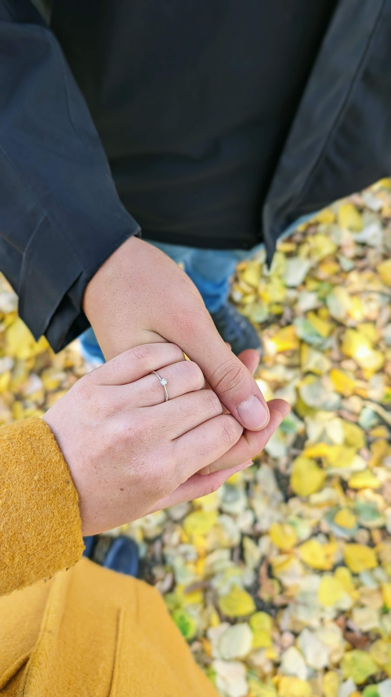

10. Október 2026
o 15:30
Obe miesta sú od seba vzdialené len 5 minút chôdze. Organizovaný odvoz z kostola na hostinu preto nie je zabezpečený.
Najväčším darom pre nás je Vaša prítomnosť. Ak by ste nás však chceli obdarovať, veľmi nám pomôže finančný príspevok do nášho spoločného života namiesto vecných darov. Prosím nenoste veľké kytice, viac nás poteší jeden symbolický kvet.
Prosíme Vás o potvrdenie Vašej účasti do 30.6.2026, prosím vyplňte dotazník za každého hosťa zvlášť.
Potvrdiť účasť (RSVP)Elegantne, ale pohodlne. Chceme, aby ste sa s nami cítili dobre, preto dresscode neriešte príliš upäto. Stačí pekná košeľa bez kravaty a šaty, v ktorých sa dá pretancovať noc (tenisky sú u nás veľké ÁNO).